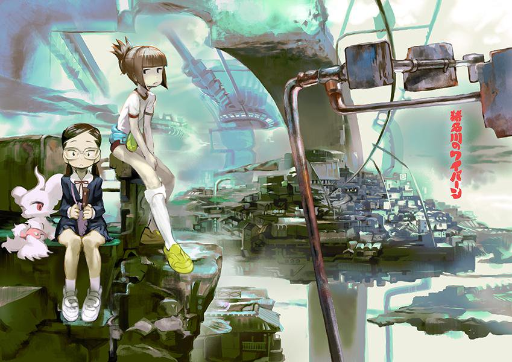

ABOUT VCASSS
Virtual Cafe Action was originally a Virtual Reality game which placed the player in an environment where they could learn the basics of food service and preparation—all while experiencing the good (and bad) interactions of customer service with a full cast of regulars and random customers alike. In the afterword the creator mentioned the actual purpose of the game was to let people enjoy the cafe he could never open. Shibuya//Streetwise//Stop is an unofficial fan-run cafe, dedicated to emulating the creator's original vision in the realm of 3D.
Far enough off the beaten path to feel like a catch—but not far enough to lose business—VCASSS, or 'Vacay's' was founded to ease the everyday battle of salaryman life! Never a dull moment in dining or experience, this cafe allows customers serendipitous enough to find it and stop in the chance to sit back, relax, and be in the moment for just a little while. Although the cafe has carved out enough of its own identity to be considered a serious restaurant, fans from all over the world still travel to the quaint Shibuya location to experience the surprisingly dedicated reproduction of the interior and menu items.
In addition to our full espresso and brew bar menu, we serve a rotating menu of refreshing and familiar home-dishes from around the world as well as a selection of sides and salads among other treats. All menu items are indeed in-game items; If you ask your waiter, they will gladly geek out about it.
Opening hours: everyday from 6am to 5pm.
Address:Japan, 〒150-0041 Tokyo, 渋谷区Jinnan, １丁目20−5 NAVI Shibuya
WHERE TO FIND US
Right here in the city!
WE ACCEPT online or over-the-line orders, so fill out your requests: